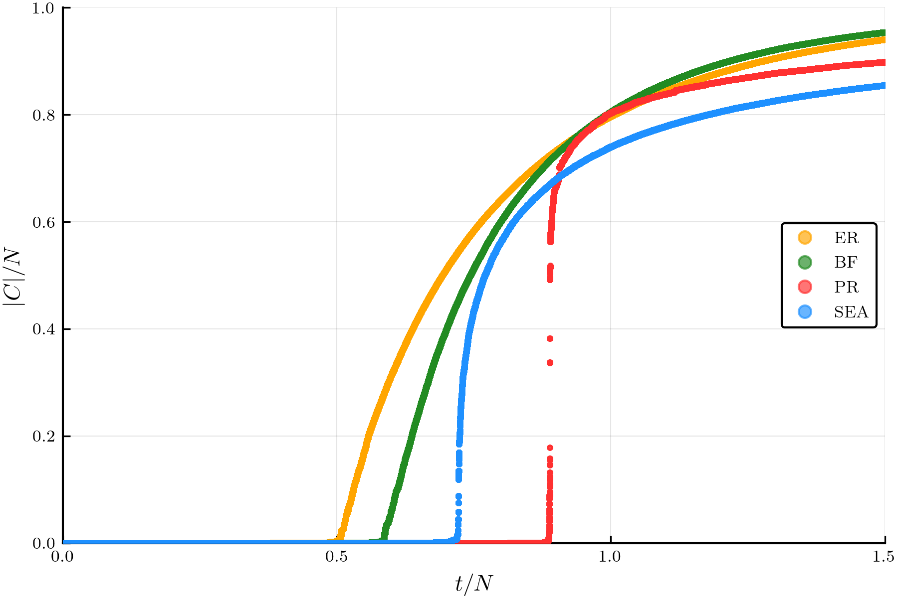

GraphEvolve.jl
A Julia package for simulating the evolution of clusters in random networks and lattices.
Check the project out on GitHub!
This package originated as part of my thesis on explosive percolation.
About
I wrote my bachelor's thesis in the computational physics group at Universität Leipzig under the advisement of Prof. Dr. Wolfhard Janke and Dr. Stefan Schnabel on the topic of percolation theory. Percolation theory is a subject with a range of applications, and is often used to model phase transitions in physical systems, such as ferromagnets which have an ordered ferromagnetic phase at low temperatures and a disordered phase at high temperatures.
To be more specific the topic is based on the concept of explosive percolation, which refers to the rapid onset of large scale connectivity at the critical point in a percolating system. I designed and analyzed a model for evaluating and adding edges to a graph called stochastic edge acceptance, or SEA for short.
Illustrated in the plot below (system size $N = 10^6$) we can see the order parameter $|C| / N$ of a random network plotted against the relative number of edges present in the graph $r = t/N$ where $t$ is the total number of edges present.
- ER = Erdos-Renyi Model
- BF = Bohman-Frieze Model
- PR = Product Rule Model
- SEA = Stochastic Edge Acceptance Model

We can see that the BF, PR, and SEA models all exhibit phase transitions at a later point than the reference ER model, which has been proven to transition at $r = 0.5$. The PR and SEA models both show a significantly higher rate of change in the order parameter near the critical point.